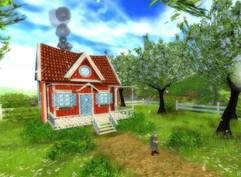
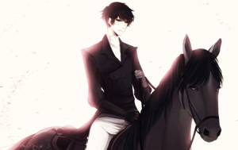
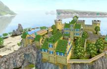
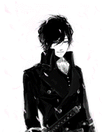
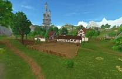
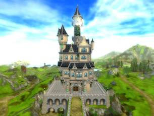
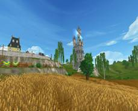
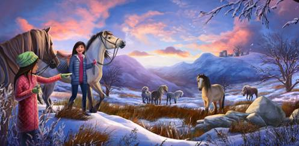

|
Домик миссис Холдворт
Это постройка в Конюшнях Морланда очень красивая и милая. В этом домике живёт
очень дружелюбная бабушка миссис Холдворт. Она
всегда поможет и подскажет что делать и чем
заняться. Около её домика могут получиться очень красивые
фотки! Её милый красный домик выглядит очень уютно и симпатично! Так же
как и сама хозяйка.
|

|
|
Кузница Морланда
В Морланде
так же есть и кузница в которой добрый кузнец
может сковать для твоей лошади новые подковы. У его кузницы горит очень
милый огонек возле которого во время зимнего
обновления можно погреться. У кузнеца всегда найдутся новые задания которые ты можешь выполнить и повысить свой
опыт.
|

|
|
Форт Пинта
Форт Пинта это уже
более интересное место чем Конюшни Морланда. В Форте Пинта есть очень большой и
просторный пляж! Так же есть место где можно
плавать и наезднику и лошади и лошади с наездником! Даже можно спрыгнуть
со специально сделанной деревянной штуки. Так же на пляже есть места где можно полежать и отодохнуть.
Ещё на пляже можно устроить пикник с друзьями и пожарить на костре
шашлыки!
Постройки
|
|

|
Уютное кафе
В Форте Пинта так же есть уютное кафе. В нём можно
потанцевать, перекусить и посидеть
с друзьями на диванчике и поболтать. Ещё в этом кафе можно сделать
не плохой такой баг на скорость лошади (он одноразовый). Для этого бага
нужно сесть на лошадь и задом начать идти в кафешку. И когда лошадь
встанет на дыбы то её нужно быстро начать разворачивать мордой к кафе. И
когда лошадь остановилась и встала мордой к кафе то нужно начать идти
вперёд. Через некоторое время можно начать разворачивать лошадь и когда
перед ней не останется никаких препятствий то она побежит как угорелая!
Пользуйтесь пока не заблокировали!
|
|
|
Множество магазинов
Ещё в Форте Пинта есть множество магазинов в которых
можно прикупить себе амуницию. Там есть разные вещи за разные валюты! Например
или за Ширинги Юрвика или за Star Coins. Новички так же могут прикупить себе разные вещички но
не столько много как Pro игрок. Так же в Форте Пинта есть магазин лошадей где ты
можешь прикупить себе парочку лошадей.
|
|
Деревня Серебрянной Поляны
Деревня Серебрянной Поляны это место где очень много
разных построек! Там есть большие стадионы где ты можешь тренироваться
ездить и прыгать. Ещё есть большой замок в котором почему то никого нет.
Есть множество магазинов. Но это место доступно только для Star Rider’ов.
Но у меня эта местность открыта потому что у меня есть статус Star Rider.
Постройки
|
|

|
Большой замок
В Деревне Серебрянной Поляны главная
достопремичательность это большой
замок. Возле него есть немного места где можно потренироваться резко
заворачивать. Или возле него можно просто собраться с о свом конным
клубом или просто побегать с друзьями.
|
|

|
Большие поля
В Деревне Серебрянной Поляны есть большие поля по
которым можно побегать и поиграть с друзьями. Их там очень много! Но
когда будете бегать с другом будте осторожны! Ведь покоску на полях никто
не отменял. По полям ездят большие машины которые косят поля и если ты
попадёшся под виллы этих машин то тебя сразу же перевезут в твою конюшню.
|
|
Ну а теперь как я и обещала я
расскажу почему я особо не бываю в Конюшнях Морланда. Это всё связанно с
тем что я уже 9 уровеь и у меня открыто множеств других интересных
локаций таких как: Южное Копыто,
Виноградники (мой дом), Ярхленд (надеюсь правильно написала) и множество других локаций! Вот
поэтому меня почти никогда не бывает в Конюшнях Морланда. Я там бываю
только когда мы с моей подругой играем вместе. Она просто новичок и у неё
не открыты локации как у меня.

А как я
добилась 9 уроня можно будет прочитать во вкладке “Новости”
|
|
|
|
|